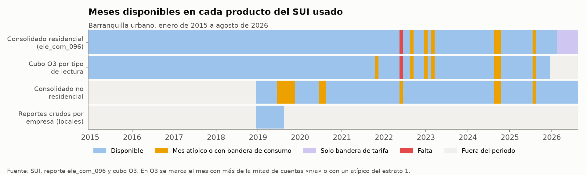
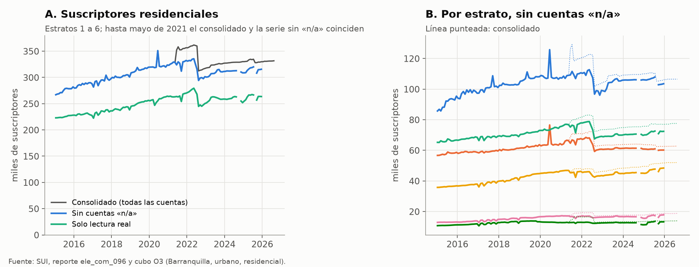
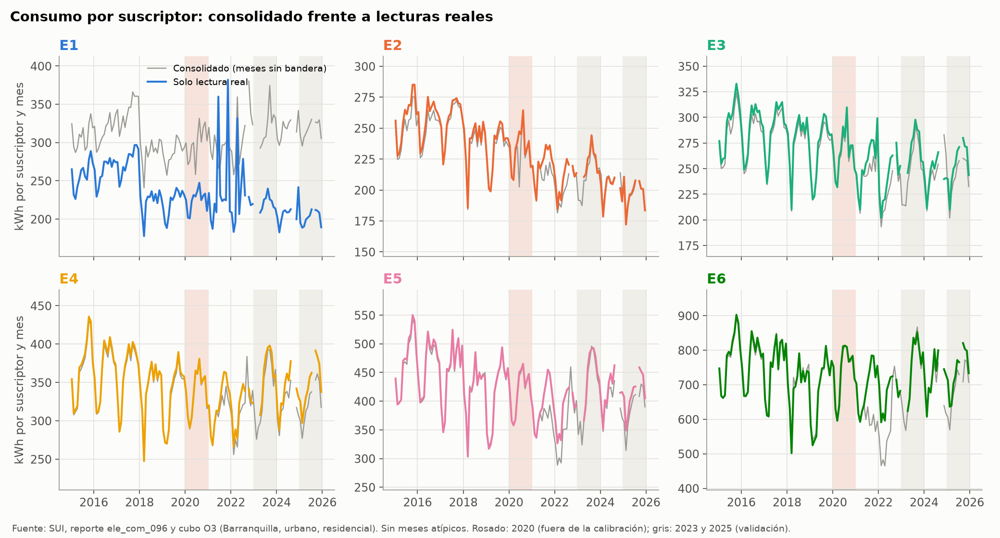
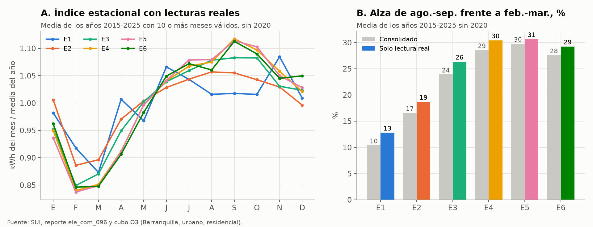
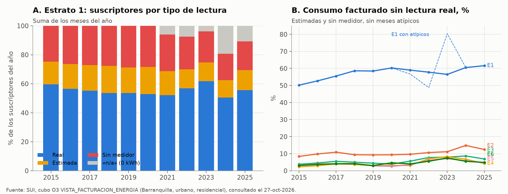
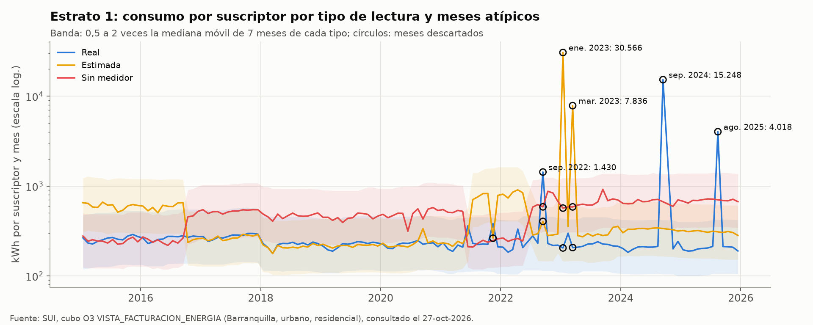
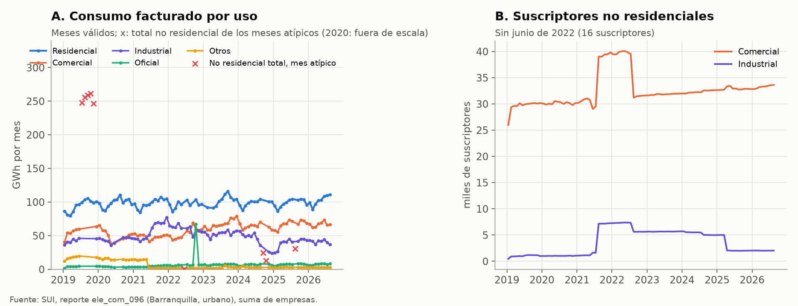

Sistema Único de Información (SUI)#
El Sistema Único de Información de la Superintendencia de Servicios Públicos Domiciliarios es la fuente del consumo eléctrico facturado contra el que se calibra el modelo, y también de los suscriptores con los que se expanden a la ciudad las tasas de las encuestas. La tesis usa dos productos del SUI para Barranquilla urbano: el reporte consolidado comercial de energía, con suscriptores, consumo y valor facturado por estrato y mes (Superintendencia de Servicios Públicos Domiciliarios, 2026), y el cubo de facturación de la herramienta O3, que separa esas cifras por tipo de lectura (Superintendencia de Servicios Públicos Domiciliarios, 2026). Este capítulo describe los dos, resume su análisis exploratorio y documenta cómo se pasa de los reportes descargados a los insumos de la calibración. El detalle de los hallazgos por tipo de lectura está en Consumo del SUI por tipo de lectura, y aquí no se repite.
Qué es#
El SUI reúne la información comercial que las empresas de servicios públicos reportan a la Superservicios. En energía, cada comercializador reporta por mes, municipio, ubicación (urbana o rural), uso (residencial por estrato, industrial, comercial, oficial y otros) y empresa el número de suscriptores facturados, el consumo facturado en kWh y el valor de ese consumo. Es un registro administrativo de facturación, no una medición. Por eso registra lo que se facturó, incluidas las lecturas estimadas y los consumos asignados a usuarios sin medidor, y no registra lo que se consumió sin facturar.
El reporte consolidado (ele_com_096, «Consolidado Energía por Empresa, Departamento y Municipio») se consulta en reportes.sui.gov.co y entrega una tabla por empresa para un mes y una variable a la vez. El cubo O3 (vista SUI_COMERCIAL_ENERGIA/VISTA_FACTURACION_ENERGIA) es una herramienta de consulta multidimensional que permite agregar sobre las empresas y abrir la dimensión «tipo de lectura/medición», con las categorías real, estimada, sin medidor y «n/a». Ninguno de los dos productos llega al nivel del suscriptor. Las cifras de este capítulo son agregados por mes, estrato y tipo de lectura.
Cobertura y estructura#
La Tabla 34 resume los productos que usa la tesis y la Figura 36 muestra, mes a mes, cuáles están disponibles y cuáles tienen problemas de calidad.
Producto |
Periodo |
Meses |
Unidad de cada fila |
Filas |
Archivo |
|---|---|---|---|---|---|
ele_com_096, residencial |
ene. 2015 – ago. 2026 |
139 (falta jun. 2022) |
mes × estrato (1 a 6 y total) |
973 |
|
ele_com_096, no residencial |
ene. 2019 – ago. 2026 |
92 (jun. 2022 casi vacío) |
mes, con industrial, comercial, oficial y otros |
92 |
|
Cubo O3, Barranquilla |
ene. 2015 – dic. 2025 |
131 (falta jun. 2022) |
mes × estrato × tipo de lectura |
2.640 |
|
Cubo O3, cinco municipios |
ene. 2015 – dic. 2025 |
131 o 132 según el municipio |
mes × municipio × estrato × tipo de lectura |
11.956 |
|
Reportes crudos ele_com_096 por empresa |
ene. – ago. 2019 |
8 |
mes × empresa, una variable por archivo |
24 archivos |
|


Figura 36 Meses disponibles en cada producto del SUI, con los meses atípicos o con bandera de calidad.#
En todos los productos el territorio es la zona urbana de Barranquilla, porque la zona rural del distrito no se descargó, y el archivo de cinco municipios agrega Soledad, Santa Marta, Cartagena y Medellín solo para la comparación de Consumo del SUI por tipo de lectura. La unidad es el suscriptor facturado, que la tesis toma como equivalente a un hogar (supuesto S12 de Supuestos). El consolidado tiene nueve columnas: año, mes, estrato (1 a 6 y total), suscriptores, consumo en kWh, valor del consumo en pesos, kWh por suscriptor, pesos por kWh y una bandera de calidad. El cubo O3 tiene año, mes, municipio, estrato, tipo de lectura, suscriptores, consumo, facturación por consumo y facturación total.
El mes de junio de 2022 falta en el consolidado residencial y en el cubo O3, y en el no residencial ese mes trae solo 16 suscriptores. En el consolidado hay además seis meses con bandera de consumo (septiembre de 2022, enero y marzo de 2023, septiembre y octubre de 2024 y agosto de 2025) y seis meses de 2026 (marzo a agosto) con bandera solo de tarifa, como documenta la sección 6 de Metodología. En el cubo O3, los mismos meses de 2024 y 2025 tienen entre 98 % y 100 % de las cuentas con lectura «n/a» y sin consumo.
Los dos productos son consistentes entre sí y con los reportes crudos que se conservan. Sumado sobre el tipo de lectura, el cubo O3 reproduce el consolidado en las 786 combinaciones de mes y estrato de 2015 a 2025, sin diferencias en los suscriptores y con una diferencia máxima de 1 kWh por redondeo. Los ocho reportes crudos de 2019 que están en la carpeta de descargas, sumados sobre las empresas, también dan exactamente los suscriptores y el consumo del consolidado. En esos meses solo dos comercializadores atendían el mercado residencial: Electricaribe, con 98,0 % de los suscriptores y 97,0 % del consumo, y Vatia, con el resto. En el no residencial reportaron 18 empresas, varias de ellas con usuarios no regulados (tablas/eda/sui_comercializadores_2019.csv).
Variables que usa la tesis#
Campo |
Producto |
Definición |
Uso en el modelo |
|---|---|---|---|
|
ambos |
Mes de facturación |
Calibración con 2015–2025 sin 2020, validación con 2023 y 2025 |
|
ambos |
Estrato socioeconómico del suscriptor residencial (1 a 6) |
Grupo de los arquetipos y de los parámetros por estrato |
|
O3 |
Tipo de lectura: real, estimada, sin medidor o «n/a» |
Filtro: la calibración usa solo la lectura real |
|
ambos |
Suscriptores facturados en el mes |
Pesos por estrato de diciembre para la expansión y la postestratificación. Denominador del consumo por suscriptor |
|
ambos |
Consumo facturado (kWh) |
Numerador del consumo por suscriptor |
|
derivado |
|
Nivel por estrato, alza estacional y respuesta mensual al calor (Ecuación 9) |
|
consolidado, O3 |
Valor facturado por el consumo, sin separar subsidios ni contribuciones |
Precio medio del kWh para el factor de precio de la Ecuación 5 (supuesto S17) |
|
O3 |
Facturación total del suscriptor |
No se usa |
|
consolidado |
Marca de mes atípico en consumo o en tarifa |
Exclusión de meses |
|
consolidado no residencial |
Consumo y suscriptores de los usos no residenciales |
Contexto para comparar con la demanda de XM. No entra a la calibración |
Análisis exploratorio#
Los resultados de este apartado salen de scripts/eda/sui.py, que guarda las tablas agregadas en tablas/eda/sui_*.csv.
Suscriptores por estrato#


Figura 37 Suscriptores residenciales por mes con todas las cuentas, sin las cuentas «n/a» y solo con lectura real (A), y por estrato (B).#
Los suscriptores residenciales pasaron de 281.920 en diciembre de 2015 a 329.892 en diciembre de 2025, 17 % más (Figura 37). La composición por estrato casi no cambió: el estrato 1 tiene entre 32 % y 34 % de los suscriptores en todos los años, y la única tendencia visible es el aumento del estrato 4, de 13,0 % a 15,7 % (tablas/eda/sui_suscriptores_diciembre.csv). Esa estabilidad es la que permite expandir con los pesos de diciembre de cada año, como hace Coherencia entre fuentes.
El consolidado tiene dos saltos de suscriptores que no corresponden a hogares nuevos. De junio de 2021 a julio de 2022 suma entre 24.000 y 44.000 cuentas «n/a» sin consumo, que inflan el total de diciembre de 2021 a 356.575 cuando sin ellas es de 332.254. En junio de 2020, las cuentas sin medidor de los estratos 1 y 2 aumentan en unas 31.000 durante un solo mes sin que cambie su consumo total, lo que baja el consumo por suscriptor de ese tipo. Sin las cuentas «n/a», los suscriptores con lectura real son entre 81 % y 84 % del total en 2015 y 2025.
Consumo por suscriptor: consolidado frente a lecturas reales#


Figura 38 Consumo mensual por suscriptor de cada estrato en el consolidado y con solo lecturas reales, sin meses atípicos.#
En los estratos 2 a 6 las dos series se superponen hasta mediados de 2021 (Figura 38). Desde entonces el consolidado queda por debajo, porque divide el consumo también entre las cuentas «n/a». En el estrato 1 la diferencia es de nivel y está en todo el periodo, pues el consolidado supera a las lecturas reales en 60 a 110 kWh por mes. La Tabla 36 resume los dos periodos que comparan los capítulos anteriores y el periodo de calibración.
Periodo |
Serie |
E1 |
E2 |
E3 |
E4 |
E5 |
E6 |
|---|---|---|---|---|---|---|---|
2015–2019 |
Consolidado |
308 |
245 |
278 |
353 |
442 |
735 |
2015–2019 |
Lecturas reales |
248 |
250 |
284 |
356 |
444 |
736 |
2023–2025 |
Consolidado |
320 |
205 |
246 |
328 |
402 |
704 |
2023–2025 |
Lecturas reales |
212 |
206 |
255 |
346 |
423 |
737 |
Calibración (2015–2025 sin 2020, 2023 y 2025) |
Lecturas reales |
241 |
236 |
271 |
345 |
428 |
722 |
Las cifras del consolidado de 2015–2019 son las de la Tabla 13, y las de lecturas reales difieren en menos de 2 % de las de la Tabla 65, que usan otra regla de atípicos y suman el consumo del periodo antes de dividir. Con lecturas reales, el estrato 1 consume lo mismo que el 2 en 2023–2025 y el orden de los estratos sigue al de la tenencia de A/C. La serie anual por estrato está en tablas/eda/sui_kwh_anual.csv.
Estacionalidad#


Figura 39 Índice estacional del consumo con lecturas reales (A) y alza de agosto–septiembre frente a febrero–marzo con el consolidado y con lecturas reales (B).#
El consumo de los estratos 3 a 6 tiene un ciclo anual claro, con el mínimo en febrero, unos 15 % por debajo de la media del año, y el máximo en septiembre en los estratos 4 a 6, 11 % por encima, siguiendo a la temporada calurosa. En el estrato 3 el máximo se extiende de agosto a octubre (Figura 39). El estrato 2 tiene el mismo ciclo con menos amplitud, y el estrato 1 no tiene un patrón definido después de marzo. El alza de agosto–septiembre frente a febrero–marzo crece con el estrato hasta el 4 y se mantiene entre 28 % y 31 % en los estratos 4 a 6. Con lecturas reales el alza es entre 1 y 3 puntos mayor que con el consolidado, porque las lecturas estimadas y los consumos sin medidor responden menos al clima. Con 2020 incluido, el alza del consolidado reproduce la de la Tabla 13 (de 10,9 % a 29,1 %). Con lecturas reales da 13 %, 19 %, 26 %, 30 %, 30 % y 29 % del estrato 1 al 6, cerca de la Tabla 65 salvo en el estrato 1 (13 % frente a 16 %), cuyo valor depende de la regla de atípicos (tablas/eda/sui_alza_estacional.csv).
Tipos de lectura#


Figura 40 Suscriptores del estrato 1 por tipo de lectura (A) y parte del consumo facturado de cada estrato que no viene de una lectura real, sin meses atípicos (B).#
En el estrato 1, entre 50 % y 62 % de los suscriptores-mes de cada año tienen lectura real, y el resto se reparte entre lecturas estimadas (12 % a 19 %), usuarios sin medidor (18 % a 29 %) y, desde 2021, cuentas «n/a» (Figura 40). Como a los usuarios sin medidor se les factura mucho más que a los medidos (677 frente a 212 kWh por suscriptor y mes en 2023–2025), la parte del consumo que no viene de una lectura real es mayor que su parte de los suscriptores. Sin los meses atípicos, esa parte sube de 50 % en 2015 a 62 % en 2025 en el estrato 1. Con ellos el año 2023 llega a 80 %, que es el extremo del rango de 50 % a 80 % de Consumo del SUI por tipo de lectura. En los demás estratos la parte no medida es de 2 % a 15 % y creció después de 2021 (tablas/eda/sui_no_real_anual.csv y tablas/eda/sui_tipo_lectura_anual.csv).
Valores atípicos y faltantes#


Figura 41 Consumo por suscriptor del estrato 1 por tipo de lectura, con la banda de 0,5 a 2 veces la mediana móvil y los meses descartados.#
La regla de limpieza del cubo O3 descarta, dentro de cada estrato y tipo de lectura, los meses cuyo consumo por suscriptor queda fuera de 0,5 a 2 veces la mediana móvil centrada de siete meses. En el estrato 1 marca las lecturas estimadas de enero y marzo de 2023, de 30.566 y 7.836 kWh por suscriptor, y las lecturas reales de septiembre de 2022, septiembre de 2024 y agosto de 2025 (Figura 41). También marca las estimadas de noviembre de 2021, que quedan en un tercio de su mediana. Los dos últimos son meses en que casi todas las cuentas del estrato aparecen como «n/a» y solo quedan 1 y 5 suscriptores con lectura real. En total la regla marca 88 de las 2.316 celdas de mes, estrato y tipo de lectura con consumo. De ellas, 55 están en los estratos 5 y 6, casi todas en la categoría sin medidor y con una mediana de 17 suscriptores por celda, de modo que pesan poco en el consumo del estrato (tablas/eda/sui_atipicos_o3.csv).
La regla no basta en tres casos, que se ven en la Figura 41 y en la Figura 38. La refacturación de septiembre de 2022 sube a la vez el consumo de todos los estratos, y en los estratos 2 a 6 la lectura real queda entre 1,1 y 1,8 veces su mediana, dentro de la banda. Por eso la variante de este capítulo descarta también, en todos los estratos, los seis meses con bandera de consumo en el total del consolidado. Las lecturas estimadas del estrato 1 pasan de unos 250 a unos 800 kWh por suscriptor de julio de 2021 a mayo de 2022, un nivel sostenido que la mediana móvil acompaña sin marcar, y cuatro meses de lectura real del estrato 1 (junio y noviembre de 2021, abril de 2022 y febrero de 2023) quedan entre 1,4 y 1,7 veces la mediana. Estos últimos no se descartan con la regla vigente.
No residencial#


Figura 42 Consumo facturado mensual por uso (A) y suscriptores comerciales e industriales (B), Barranquilla urbano, 2019–2026.#
Con los meses válidos, el residencial es entre 43 % y 47 % del consumo facturado de la zona urbana de 2020 a 2026, el comercial entre 49 y 67 GWh por mes y el industrial entre 39 y 60 GWh (Figura 42, tablas/eda/sui_no_residencial_anual.csv). La serie no residencial tiene más problemas que la residencial. De julio a noviembre de 2019 y en julio y agosto de 2020 el consumo se duplica o más, en junio de 2022 el reporte está casi vacío y en septiembre y octubre de 2024 y agosto de 2025 cae a una fracción, en los mismos meses que el residencial. Hay además cambios de clasificación: en agosto de 2021 los suscriptores industriales pasan de 1.600 a 7.100 y los comerciales de 29.000 a 39.000, y el uso «otros» cae de unos 15 a 2 GWh por mes. La tesis no calibra con el no residencial. Su utilidad es la comparación con la demanda de XM del mercado de Air-e, que según Coherencia entre fuentes requiere además el SUI de los tres departamentos.
Procesamiento paso a paso#
En reportes.sui.gov.co se consultó el reporte ele_com_096 mes a mes con ubicación urbana, departamento del Atlántico y municipio de Barranquilla, una vez por variable (suscriptores, consumo y valor del consumo). Cada consulta devuelve un archivo con una fila por empresa y columnas por estrato y uso. Salida: 3 archivos por mes, de enero de 2015 a agosto de 2026. En la carpeta de descargas solo quedan los de enero a agosto de 2019 (
Downloads/Superservicios/SIU 2019/, 24 archivos). Los demás se procesaron en otro entorno de trabajo y su agregado intermedio no está en el repositorio.Para cada mes y variable se tomaron las filas con dato en «Total residencial», «ND» se tomó como 0 y se sumaron las empresas por estrato y para el total. Salida: una fila por mes con los suscriptores, el consumo y el valor de cada estrato. Script:
scripts/sui.py. Razón: el modelo representa a todos los hogares de la ciudad, no a los clientes de una empresa. Con los archivos de 2019,scripts/eda/sui.pycomprueba que la suma coincide con el consolidado.El tramo 2015–2018 se descargó después que el de 2019–2026 y se unió con él. Entrada: los dos agregados. Salida:
tablas/SUI_Barranquilla_urbano_residencial_2015_2026.csv, con el kWh por suscriptor y los pesos por kWh calculados. Script:scripts/sui3.py. La coincidencia exacta con el cubo O3 en 2015–2018 confirma que el empalme no introduce diferencias.Por estrato, se marca como consumo atípico el mes con kWh por suscriptor por fuera de 0,5 a 1,5 veces la mediana de toda la serie del estrato, como valor negativo el de valor facturado menor que cero y como valor atípico el de un precio por kWh mayor que 3 veces o menor que 0,3 veces la mediana. Script:
scripts/sui3.py. Las reglas y los meses afectados están en la sección 6 de Metodología.Con los meses sin bandera y los años con 10 o más meses válidos se calcularon el índice estacional y el alza de agosto–septiembre frente a febrero–marzo. Salida:
tablas/SUI_estacionalidad_2015_2025.xlsxy la Tabla 13. Script:scripts/estacionalidad_sui.py.La misma consulta del paso 1, con las columnas industrial, comercial, oficial y otros sumadas sobre todas las empresas, incluidos los usuarios no regulados. Salida:
tablas/SUI_Barranquilla_urbano_NO_residencial_2019_2026.csv. Script:scripts/sui2.py. No lleva banderas porque no entra en la calibración.El 27 de octubre de 2026 se consultó la vista de facturación con ubicación urbana, uso residencial, los seis estratos, todas las empresas y todos los tipos de usuario sumados, de enero de 2015 a diciembre de 2025, abriendo el tipo de lectura. La respuesta de la página (la cuadrícula HTML y los bloques de filas en JavaScript) se convirtió en CSV. Salida:
tablas/SUI_O3_Barranquilla_residencial_lectura_2015_2025.csvy el archivo de cinco municipios. Script:scripts/sui_o3/o3_a_csv.py, con los pasos para repetir la consulta en Consumo del SUI por tipo de lectura. Razón: el consolidado no separa lo medido de lo estimado, y ese era el pendiente del estrato 1 en Datos sospechosos y pendientes.Se suma el cubo sobre el tipo de lectura y se compara mes a mes y estrato por estrato con el consolidado. Resultado: 786 filas iguales. Script:
scripts/eda/sui.py. Razón: asegurar que los dos productos describen la misma población antes de usar uno para corregir al otro.Las cuentas con lectura «n/a» tienen consumo cero y aparecen desde junio de 2021. Se excluyen del denominador del consumo por suscriptor. Razón: no son hogares sin consumo sino cuentas sin lectura asignada, y su inclusión baja cerca de 5 % el consumo por suscriptor desde 2021.
Dentro de cada estrato y tipo de lectura se descarta el mes sin consumo o con kWh por suscriptor lejos de la mediana móvil centrada de 7 meses. Hoy se usan dos bandas. El cambio a clima constante y el alza estacional de Consumo del SUI por tipo de lectura usan la de 0,75 a 1,3 veces la mediana (
scripts/sui_o3/lecturas_reales.py), y la parte del consumo sin lectura real usa la de 0,5 a 2 veces, que descarta el mes completo del estrato y no solo el tipo de lectura atípico, para no sesgar la proporción. Razón: la regla relativa a la mediana móvil sigue la tendencia del consumo y separa los errores de reporte de los cambios reales.Para este capítulo,
scripts/eda/sui.pyaplica la banda de 0,5 a 2 veces y, como comprobación, descarta además en todos los estratos los seis meses con bandera de consumo en el total del consolidado. Con los meses que quedan calcula el consumo por suscriptor de cada estrato y mes con solo las lecturas reales. Salida:tablas/eda/sui_atipicos_o3.csv(con el motivo de cada descarte),tablas/eda/sui_kwh_anual.csvytablas/eda/sui_kwh_periodos.csv. Quedan 113 meses por estrato en 2015–2025 sin 2020. Esta variante no reemplaza a la del capítulo 17. Sirve para medir cuánto dependen las cifras de la regla, y la elección de la regla para la calibración queda pendiente (ver el último párrafo de este capítulo). Razón: la calibración usa solo las lecturas reales (supuesto S18 de Supuestos).Con el cubo O3,
scripts/sui_o3/lecturas_reales.pyestima el cambio a clima constante y la parte del consumo sin lectura real,scripts/sui_o3/comparacion_municipios.pycompara las cinco ciudades yscripts/sui_o3/caida_consumo.pydeflacta el precio. Con las lecturas reales,fase2/clima/scripts/04_cdh_sui.pyestima la respuesta mensual al calor (Ecuación 9). Con el consolidado,scripts/ceela_sui.pycompara con CEELA (CEELA).
Qué entrega al modelo#
El SUI entrega cuatro insumos, que Insumos del modelo reúne con los de las demás fuentes:
Los suscriptores residenciales de diciembre de cada año, que son los pesos por estrato con los que se expanden las tasas de la ECV a la ciudad y se cuentan los hogares por estrato (Tabla 13). Se usan los del consolidado. En diciembre de 2021 las cuentas «n/a» inflan el total en unas 24.000, pero casi no cambian la participación de cada estrato (la del estrato 1 es 33,7 % con ellas y 33,3 % sin ellas).
El blanco de calibración, que es el consumo mensual por suscriptor con lectura real de cada estrato, de 2015 a 2025 sin 2020, con 2023 y 2025 reservados para la validación (Tabla 36).
El patrón estacional, es decir, el alza de agosto–septiembre frente a febrero–marzo y el índice estacional con lecturas reales, junto con la respuesta mensual al índice de calor que estima
04_cdh_sui.py(Tabla 65).El precio medio del kWh por estrato y año para el factor de precio (
tablas/eda/sui_cop_kwh_anual.csvytablas/SUI_O3_precio_real_E4_municipios.csv), y la parte del consumo facturado sin lectura real, que se reporta aparte en la demanda de toda la ciudad.
Problemas encontrados y cómo se trataron#
Problema |
Dónde |
Tratamiento |
|---|---|---|
Falta junio de 2022 |
Consolidado y cubo O3. El no residencial trae 16 suscriptores |
Mes faltante. No se imputa |
Cuentas «n/a» con 0 kWh, 3 % a 12 % de las cuentas desde junio de 2021, y 98 % a 100 % en sep. y oct. de 2024 y ago. de 2025 |
Consolidado (sin separarlas) y O3 |
Se excluyen del consumo por suscriptor. Los tres meses quedan sin dato |
Refacturaciones: sep. de 2022 (el consumo total se duplica y el valor es negativo), ene. y mar. de 2023 en el estrato 1 |
Ambos |
Bandera en el consolidado. En el cubo O3, la banda de 0,75 a 1,3 los descarta en el estrato 1. La variante de este capítulo los descarta en todos los estratos |
Lecturas estimadas del estrato 1 de 30.566 y 7.836 kWh por suscriptor |
O3, ene. y mar. de 2023 |
Regla de la mediana móvil (0,5 a 2 veces) |
Entre 50 % y 62 % del consumo del estrato 1 sin lectura real |
O3 |
Calibración solo con lecturas reales (Consumo del SUI por tipo de lectura) |
Estimadas del estrato 1 en unos 800 kWh por suscriptor de jul. de 2021 a may. de 2022 |
O3 |
No se corrige. No afecta la serie de lecturas reales |
Cuatro meses de lectura real del estrato 1 entre 1,4 y 1,7 veces la mediana |
O3, 2021–2023 |
Se conservan con la regla vigente. La regla más estricta del capítulo 17 los descarta |
Celdas pequeñas sin medidor en los estratos 3 a 6 con consumos erráticos |
O3 |
Regla de la mediana móvil. Pesan poco en el estrato |
31.000 cuentas sin medidor adicionales en los estratos 1 y 2 |
O3, jun. de 2020 |
Año excluido de la calibración |
Tarifa 10 a 20 veces mayor en los estratos 5 y 6 |
Consolidado, mar. a ago. de 2026 |
Bandera de tarifa. El consumo sí se usa |
El precio por kWh del estrato 1 en 2018–2020 es el más alto, también con solo lecturas reales (614 a 779 pesos frente a 441 a 509 en el estrato 6) |
Ambos |
Sin explicar. El análisis del capítulo 17 usa el precio del estrato 4 |
Meses duplicados y reclasificaciones de uso |
No residencial, 2019–2021 |
Bandera con la regla de 0,5 a 1,5 veces la mediana. No entra en la calibración |
Archivos crudos del consolidado fuera de 2019 no disponibles localmente |
Consolidado |
El agregado se verificó contra los crudos de 2019 y contra el cubo O3 |
Dos problemas pesan más que los demás en la calibración, y los dos afectan al estrato 1. El primero es que el estrato 1 no está medido en su mayor parte, y por eso se calibra solo con sus lecturas reales y la tenencia de A/C de los hogares calibrados se toma de los hogares que pagan la electricidad (Consumo del SUI por tipo de lectura). El segundo es la sensibilidad del estrato 1 a la regla de atípicos. Su alza estacional es de 13 % con la banda de 0,5 a 2 veces la mediana y de 16 % con la más estricta del capítulo 17, mientras que en los estratos 2 a 6 las dos reglas difieren en 1,5 puntos o menos. La respuesta mensual al calor del estrato 1 tampoco es significativa con lecturas reales (fase2/clima, script 04). Las cifras de Insumos del modelo siguen siendo las del capítulo 17. Conviene que la calibración del estrato 1 tenga un prior más ancho que el de los demás estratos y que la sensibilidad incluya la regla de atípicos, pero la elección de una regla única para la calibración es una decisión pendiente.